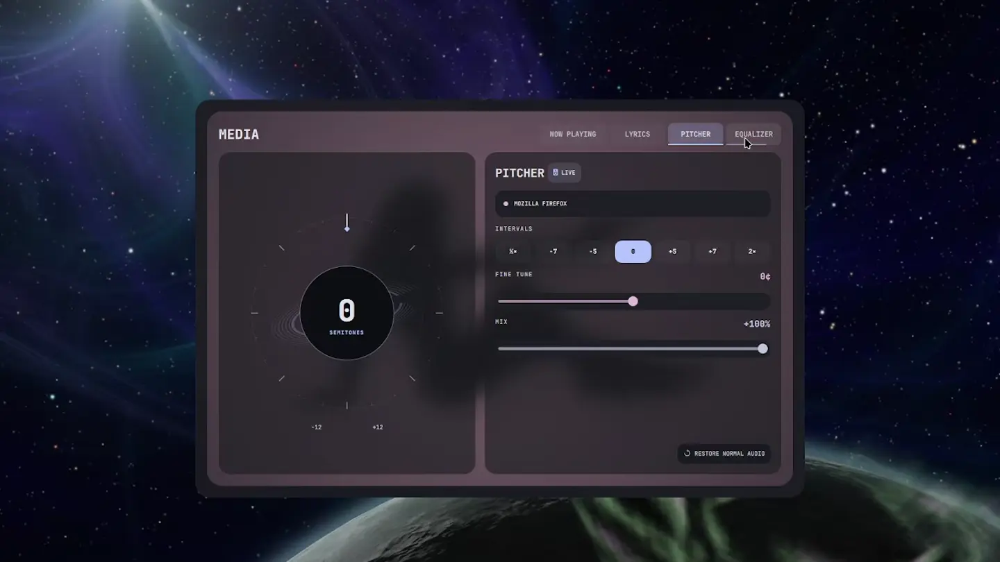

Resonance
Playback, lyrics, audio routing and visuals in one rounded console.

PlayControl any media player your session exposes through MPRIS. Whatever you’re into.
ReadTrack details and lyrics sit beside the controls, for scream-singing purposes.
ShapeRoute audio, set volume and equalizer profiles, watch the spectrum. Hypnotic, honestly.
The rundown
Switch between discovered players and keep playback controls close. No more hunting for which tab is playing.
Lyrics come from your local LRC files or LRCLIB, and are cached. Tracks without lyrics just say so.
Headphones, speakers, the Bluetooth thing you forgot was connected. Pick an output and route the sound from the console.
Artwork, spectrum and atmosphere stay inside the console’s rounded corners.
Get started
Put on your comfort playlist, then open the media console or the audio instrument.
Get Tonantzintlablackhole open media blackhole open audio